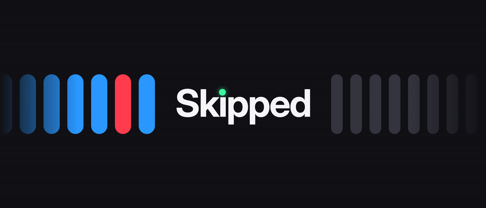
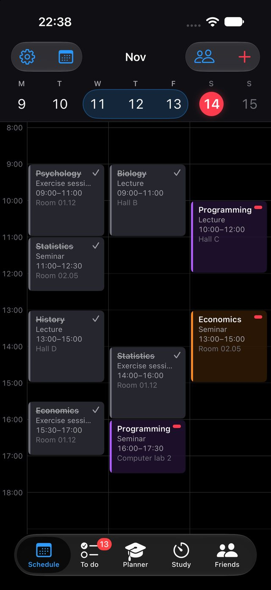
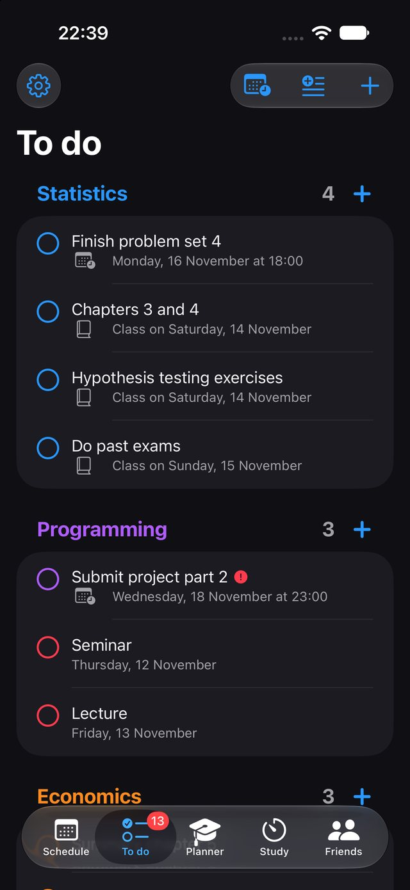
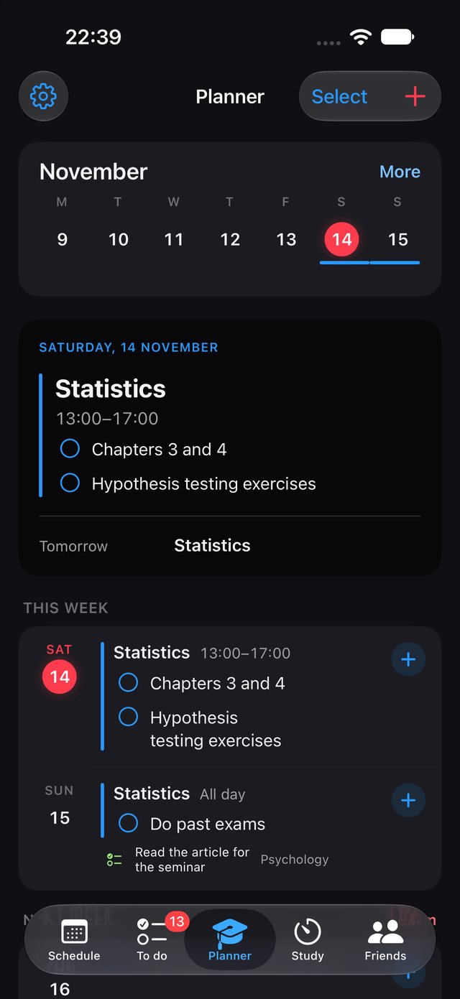
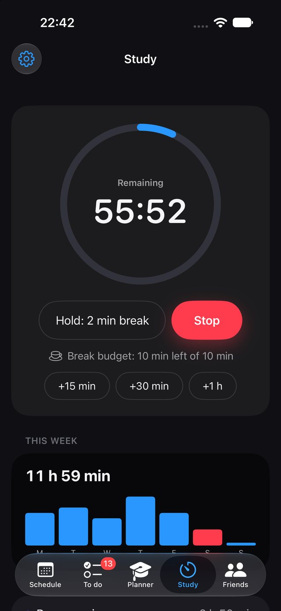
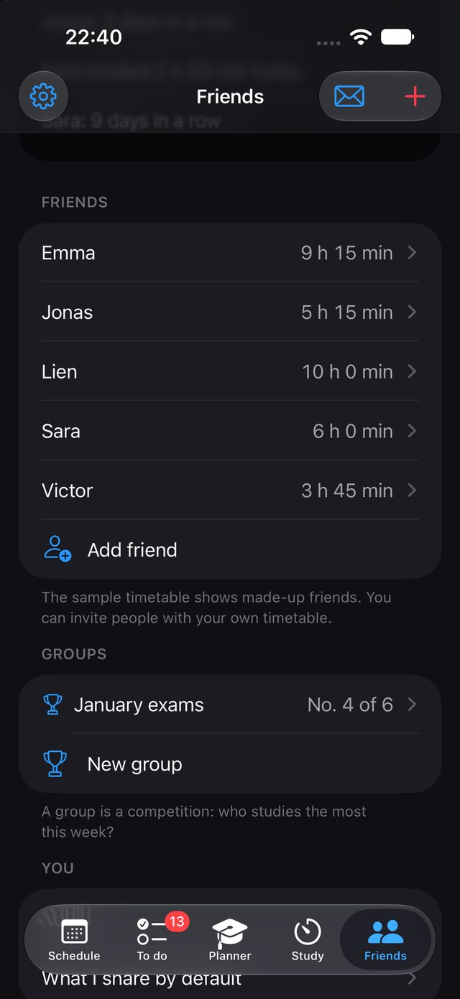
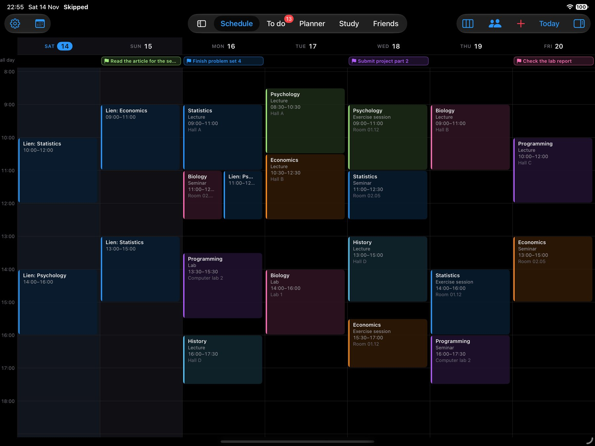

Skipped: Class TrackerElke les telt.
Hou bij welke lessen je gevolgd en gemist hebt. Blijf bij, vak per vak, tot aan het examen.
Gratis class tracker voor iPhone, iPad en Mac.
Skipped in 21 seconden. Met geluid.
Rooster
Je lessen, gewoon uit Agenda.
Skipped leest je uurrooster uit Apple Agenda. Een gevolgde les kleurt blauw, een gemiste krijgt een rood pilletje, en de lijn toont waar je dag nu staat. Wil je, dan zie je ook de lessen van een vriend in je rooster.

Te doen
Alles wat je nog moet doen, op één plek.
Te doen verzamelt elke les die je nog moet inhalen en elke taak, netjes per vak. Voeg een taak toe met een deadline of hang ze aan een les. Vink af, en ze is weg.

Planner
Je examens, dag per dag gepland.
Vul je examendata in en Skipped toont hoeveel dagen je nog hebt, wat je vandaag moet doen en wanneer je elke gemiste les inhaalt. Alles klaar ten laatste twee dagen voor het examen.

Studeermodus
Focus, met de klok mee.
Start een blok voor een vak en Skipped houdt bij hoeveel je deze week studeerde. Wil je, dan blijven afleidende apps dicht tot je blok klaar is.

Vrienden en groepen
Samen hou je het vol.
Zie wie er nu aan het studeren is en hoeveel uur je vrienden maakten. Start een groep voor de examens en kijk wie het meest studeert. Jij kiest per vriend en per groep wat je deelt.

En nog meer
Alles wat je nodig hebt.
iPhone, iPad, Mac en web
Overal hetzelfde rooster.
Via iCloud gaan je vakken, notities en studiesessies mee naar je andere toestellen. Je hoeft geen account te maken. En op een andere computer open je je rooster op het web.
Skipped op het web openen
Vragen
Vaak gesteld.
Wat is Skipped?
Skipped: Class Tracker is een gratis app voor iPhone, iPad en Mac die bijhoudt welke lessen je gevolgd en gemist hebt. Je rooster komt uit Apple Agenda, en alles wat je nog moet inhalen staat in Te doen.
Hoe hou ik bij welke lessen ik gemist heb?
Vink in Skipped elke les af als gevolgd of gemist. Een gemiste les krijgt een rood pilletje en komt in Te doen, netjes per vak, tot je ze ingehaald hebt.
Werkt Skipped met het uurrooster van mijn unief of hogeschool?
Ja, zolang je rooster in Apple Agenda staat, bijvoorbeeld via een agenda-abonnement (iCal-link) van je school. Skipped leest je lessen daaruit, je hoeft niets over te typen.
Is Skipped gratis?
Ja. Skipped is gratis voor iPhone, iPad en Mac, en je hoeft geen account te maken. Je gegevens gaan via iCloud mee naar je andere toestellen.
Kan ik studeren met een timer en afleidende apps blokkeren?
Ja. In de studeermodus kies je vrij, pomodoro of een vaste tijd. De timer loopt mee op je toegangsscherm en in het Dynamic Island, en op iPhone en iPad kun je apps blokkeren via Schermtijd.
Kan ik samen met vrienden studeren?
Ja. Je ziet wie er nu studeert en hoeveel uur je vrienden maakten, en je kunt een groep starten voor de examens. Je kiest zelf per vriend en per groep wat je deelt.
Heb ik een iPhone nodig?
De app is er voor iPhone, iPad en Mac. Op een andere computer open je je rooster via Skipped op het web.
Skipped
Elke les telt. Gratis voor iPhone, iPad en Mac.